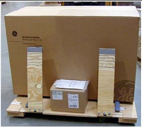
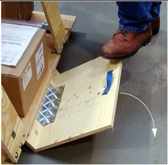
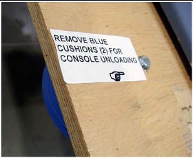
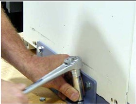
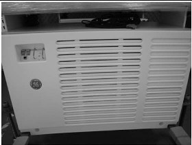
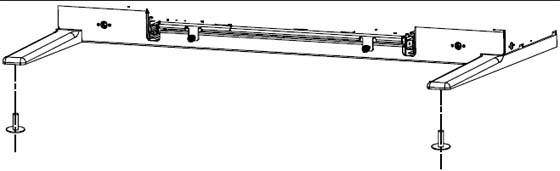
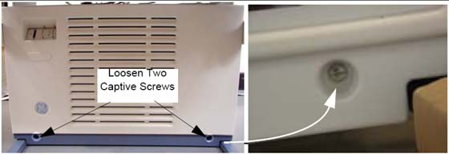
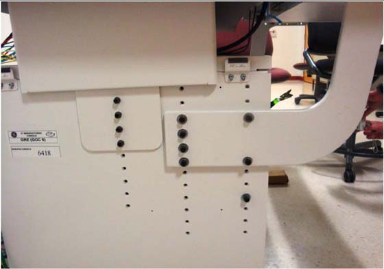
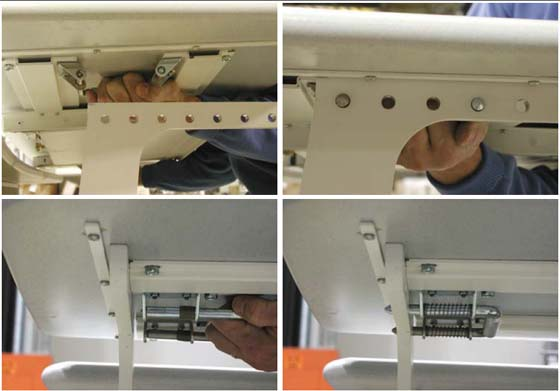

Operating Documentation
Direction 5193574-800, Rev# 22
LightSpeed 7.X Service Methods
Module Version 1.0, Version Date 4/22/10
Operating Documentation |
| Required Persons | Preliminary Reqs | Procedure | Finalization |
|---|---|---|---|
| 1 (FE or mechanical supplier) | Not Applicable | labor on-site | Not Applicable |
If console is construction site packed, vacuum the dust and debris before removing packaging.
Remove all items from the console.
Illustration 1: Console Boxed on Skid

Remove all packing materials and discard.
Place the step-board under the front edge of the skid and step on it to raise the front edge of the skid as shown in Illustration 2.
Illustration 2: Step-board used to raise front edge of skid

Remove the two front cushions from the bottom of the skid (see Illustration 3).
Illustration 3: Cushion on Bottom of Skid

Remove the Seismic Brackets from each side of the console (see Illustration 4). Save the brackets for use later if you need to mount the console to the floor.
Illustration 4: Removing the Shipping/Seismic Brackets

Lift up on the strap on the front of the step-board (Illustration 2) to lower the skid. Remove the step-board.
Ensure the console stabilizers are in line with the notched portion at the front of the skid. This allows enough clearance to smoothly roll the console down the ramps (see Illustration 5).
Illustration 5: Console Ready to be Unloaded

Move the console to the installation location.
Attach the two pads to the console stabilizers (see Illustration 6). (If not already attached)
Illustration 6: Console Stabilizer Pads

Screw the pads all the way into the legs
Loosen the two captive screws at the bottom of console.
Illustration 7: Front Cover Removal - Global Consoles

Rotate the bottom of the cover outward and upward until you can lift it free of the console at the top.
The console normally arrives with the bottom hole on the monitor top aligned with the fourth bolt from the bottom (see Illustration 8).
Illustration 8: Global Console Tabletop Adjustments

For optimum operator comfort, align the top hole of the keyboard table top with the third or fourth hole from top of cabinet.
| NOTE: | Your site may have different requirements and you may have to adjust the monitor top and/or keyboard table top up or down from this position. |
Always select a table top height that permits the operator to see the patient on the table.
Keep the one bolt-hole relationship between the monitor top and the keyboard table top.
Fasten the keyboard table top one (1) hole lower than the console table top (Illustration 8).
Insert washers on front bolts.
Install the console side covers.
Side covers are left and right specific.
After all necessary cables to the console have been run, move the console into its final position, maintaining a 15 cm (6 in.) minimum distance between the console and the wall.
Locate the spring-loaded latches at either end of the underside of the keyboard table top.
Illustration 9: Keyboard Table Top Placement

Pull the latches inward (toward center of table top).
Position table on the brackets so that the latches align with the holes.
Release the latches, making certain that the pins fully engage the bracket holes (pins should protrude beyond outside edge of bracket).
No finalization steps.